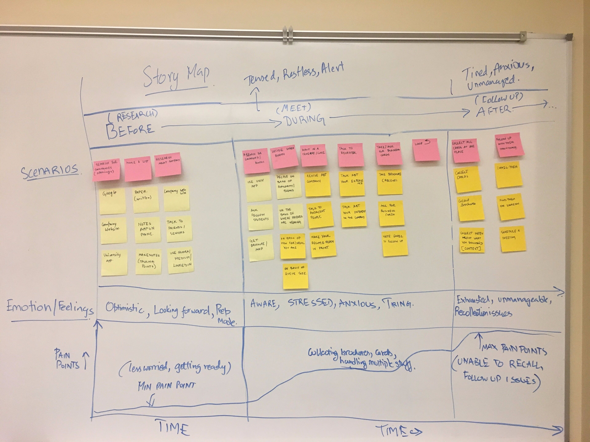
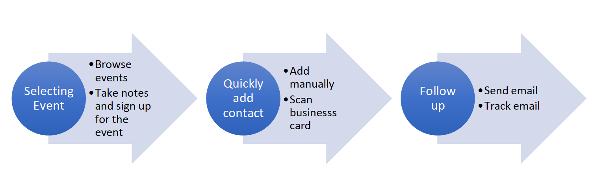
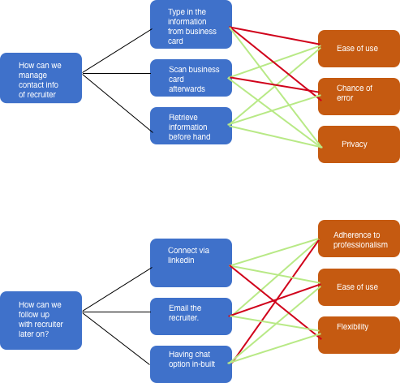
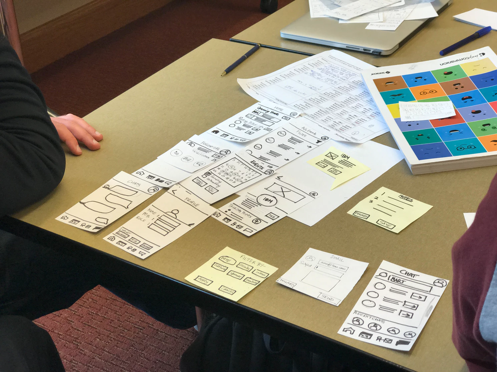

Nexus
Networking and following up made easy
Students and fresh graduates value their networks. Due to their busy schedule, they don’t get time to follow up with the recruiters or networks after any networking event - whether it is in University or outside it. Imagine in a networking event, you shake hands and connect with hundreds of people.
Enter Nexus. A new way to follow up and connect with people. Now you don’t need to worry about any of your connection getting lost in the crowd.
Background and Context
This project came to life for few reasons. Firstly, as a student, my experience of attending career fairs in the university was quite stressful. As a designer, this became quite challenging because I was solving my own problem. Secondly, existing solutions were not effective and even more overwhelming. They focused more on making people adopt their own network for connecting and following up in the form of wearables or digital business cards. Lastly, user research (interviews and surveys) showed that people found it difficult to enter contact information or collect business cards.
Scoping our Problem
Initially, this problem seemed very broad. Ongoing through the process of diverging and converging, I ended up with well defined challenge.
1. Diverging
Borrowing ideas from design sprint and doing the exercise of 8 crazy sketches, I came up with 8 different user stories for the problem. Each of the ideas in the stories were based on different settings and social environments.
2. Converging
Since I was the only one in this project, instead of using zen voting, I started wearing different hats - technical feasibility, user focussed etc. Assuming those roles made me realize possible story I could go ahead with. I went ahead with the story of career fair and started defining that user story in detail.
User Story
After diverging and converging, greatest challenge was to choose one story. As mentioned before, I choose the story that best aligned with user research, technical feasibility and my intuition. Finally, after setting aside my personal feelings, I chose the story of the student in a career fair setting.
Journey of a user at a career fair
But the problem had to be scoped further. I decomposed the whole scenario into three phases - Before fair, during fair and after the fair. On analyzing pain points in different phases, I found that students reported maximum pain points after the career fair i.e they were unable to recall or follow up with the person. And so our challenge became,
"How might we design an application that helps student manage following with the networks after the event."
What should the app do?
Key Use-Cases
Use Cases
Our key use cases were:
- Selecting Event (user can browse through list of events and take notes)
- Adding contact quickly (since user will be in fast paced setting)
- Follow up (users generally get overwhelmed after the process, so easing out this process is essential)
What the app should NOT do
- Not function as an application to connect (like Linkedin)
- Not function as external social network separate from existing ones.
- Event selecting and browsing are secondary functions
Design Rationale
I used ease of use, flexibility, connecting with recruiter and privacy as guiding principles for making design decisions. Click here to look at detailed design space analysis for different use cases. Key outcomes were -
- Login using LinkedIn
- Scanning Business Cards
- Ability to take notes before interview
Prototyping and Validation
Paper Prototyping and testing
Prototyping and Testing
Paper prototyping proved valuable for addressing user interface flows and other flawed navigation issues.

Key decisions that came out of the session were:
- Unify the events page and the upcoming events page so that they both lead to a common page.
- Modifying the affordance of the discard button. Instead of discard button, better option might be a pop-up “X” sign at the top right of the pop-up. Also, list of events needs to be added and less focus needs to be given on the calendar view.
- Option to collapse and expand the calender view.
- Have a clear list of completed and pending follow ups. If the user has completed a follow up, then he/she should be able to mark that as done and later view that in archived follow ups.
Design Evolution
Visually, the design evolved from paper to medium fidelity prototype in following fashion:
Design Evolution
In the design evolution, the basic architecture of the home page remained the same. On the other hand, screens involving filter design, follow up screen etc. Follow up screen initially included only two options - Pending and Completed follow ups. In the subsequent designs, the two options mentioned before got split into 3 options – Ongoing conversation, Awaiting reply and Pending response. These options were more relevant and discreet as compared to the initial ones and gave the user clear idea of status. Resulting change also led to change in the home screen as shown above.
Final Design and Impact
In the second round of user testing, I incorporated lots of feedback from users which included -
- "I wanted to have a whole page to type my notes"
- "Icons can be more clear"
- "Allow users to choose different templates"
- "Adding people without business card"
Impact
Realizing this mobile application in real can ease out the whole networking process for the students. Currently, university grads are under immense pressure with getting jobs and internship and this app would be a small step in easing out their pain by removing the need to collect everyone’s business card and being able to manage their networks effectively.
Measuring Success
Some of the metrics that can be used to gauge the success of the application-
- No. of people followed up
- No. of people from which you have heard back. (Ongoing conversation)
- No. of business cards scanned.
- User satisfaction before and after the app. (HATS Score.)